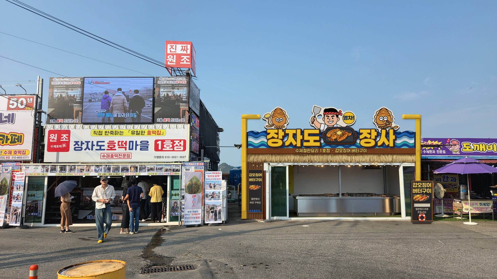
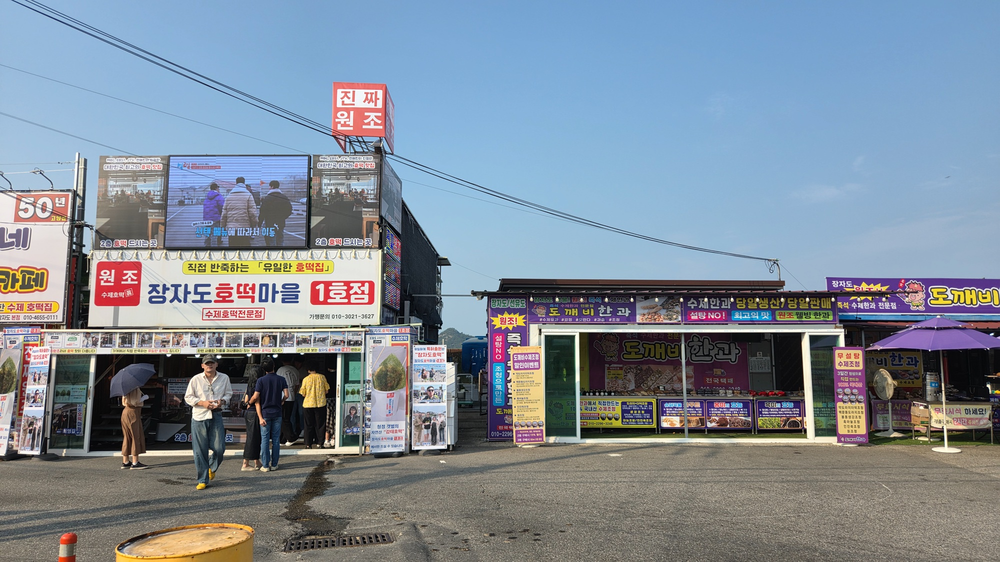
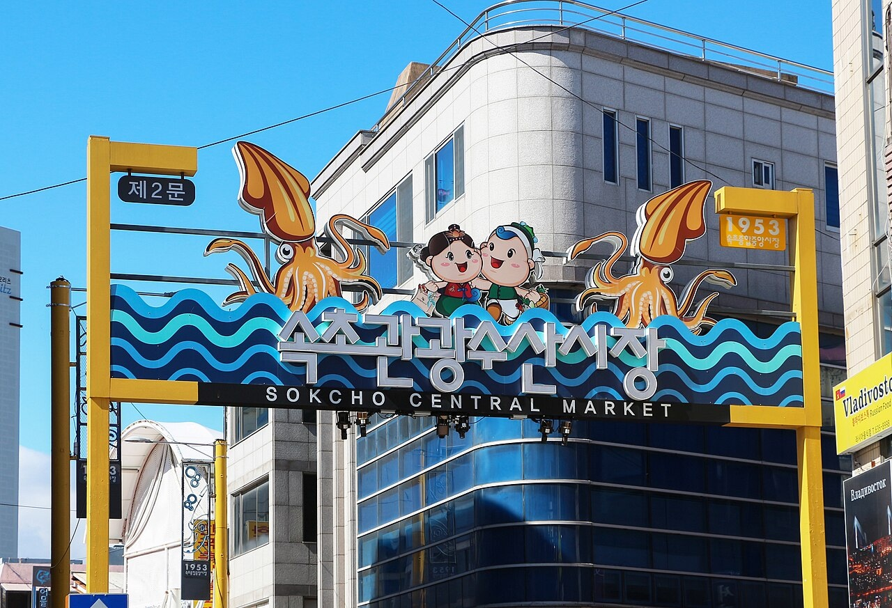
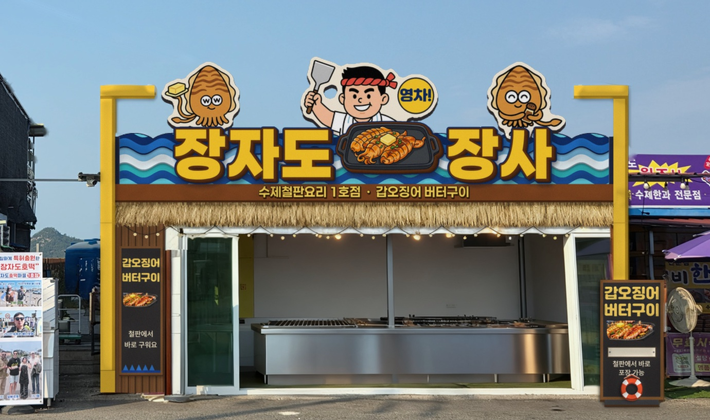
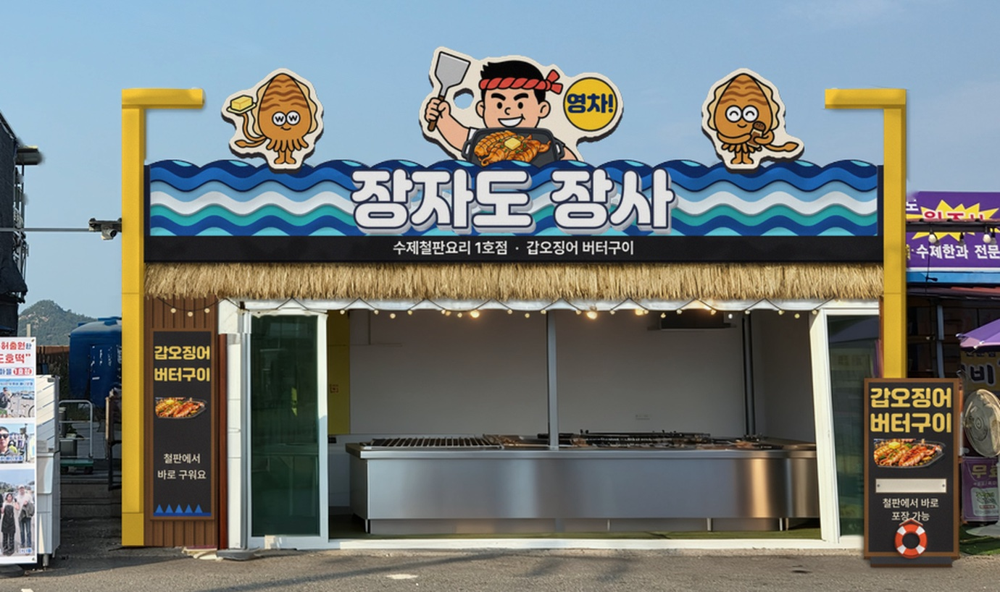
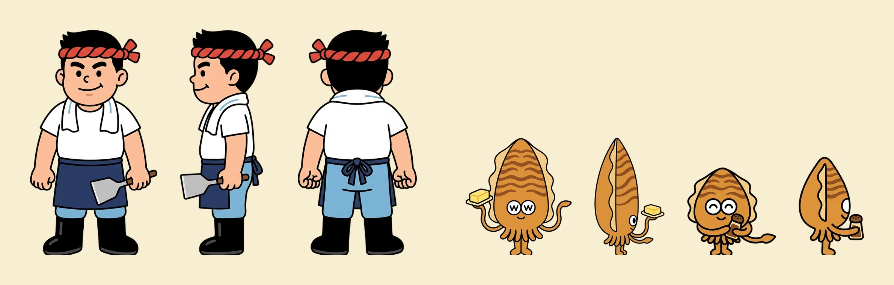
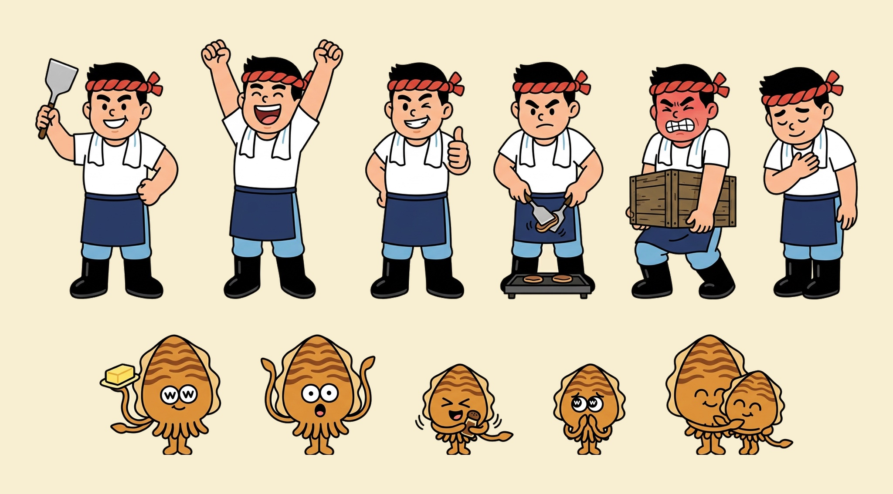
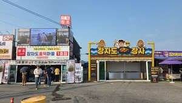

장자도 장사
간판·사인
디자인 제안서
제안 JAON 인태리 (인테리어·사인 총괄) · 일자 2026.10.13 · 판 v1.1 · 시안 14라운드 A안(최종·일단) 기준
개략 설계안입니다. 모든 치수는 사진 비례 추정(≈)이며 실측·관청 확인·업체 견적 전입니다.
목차
Ⅰ. 이해
02 프로젝트 개요와 범위
03 현장 분석
04 디자인 컨셉
05 디자인 발전 — 초안에서 게이트로
05-2 다듬기 — 9 → 14라운드
Ⅱ. 캐릭터
06 캐릭터 — 장사와 조수 둘
07 캐릭터를 간판에 올리는 법
Ⅲ. 디자인
08 대표 투시도 (전경)
09 근경 투시도
10 정면 입면도 · 치수
11 측단면 · 고정 구조
12 사인 상세 사양
13 컬러 · 자재
14 원거리 가독성
Ⅳ. 실행
15 개략 예산
16 공정 · 진행 순서
17 확인 필요 사항
18 다음 단계 — 내부 인테리어
19 업체 견적 요청서 (초안)
20 출처 · 문서 정보
이번에 정하는 것은 하나 — 멀리서 보이는 가게의 얼굴입니다
가게
| 상호 | 장자도 장사 (메인, 잠정) · 수제철판요리 1호점 (서브) |
|---|---|
| 메뉴 | 갑오징어 버터구이 한 가지 — 철판에서 바로 굽고 포장 |
| 자리 | 군산시 옥도면 장자도, 호떡마을 1호점 바로 오른쪽 (현 '도깨비한과' 자리) |
| 건물 | 단층 가건물(컨테이너형으로 보임), 정면 전체가 열리는 유리문 — 건축물 지위 확인 필요 |
| 손님 | 섬 관광객 — 주차장·호떡마을 쪽에서 걸어오며 가게를 고르는 사람 |
이번 범위 간판·사인 + 캐릭터
- 게이트 구조(노란 기둥 2개) · 물결 상호 띠 · 서브 띠
- 입체 상호 + 두 단어 사이 철판 판 · 지붕 위 캐릭터 판 3개 + '영차!' 말풍선
- 초가 처마 · 전구 줄 · 세로 메뉴판 · 입간판
- 캐릭터 '장사'와 조수 둘 (디자인 확정본)
범위 밖 다음 단계로
- 내부 인테리어 · 조리 설비 배치 · 포장 동선 (18장)
- 메뉴판 내용 · 가격 · 포장 용기
진행: 인태리 설계 → 미지 합성 시안 → 인태리 검수. 9라운드 A안으로 배치를 정하고, 14라운드까지 상호·철판·서브 띠·조수 크기를 다듬어 10-13 최종(일단). 창업주가 처음 고른 초안 이미지(AI)를 출발점으로 삼았습니다.
이 거리에서 하늘이 비어 있는 곳은 우리 지붕 위뿐입니다

① 원색 과밀
왼쪽은 대형 전광판·빨강 박스, 오른쪽은 보라. 크기·밝기·글자 수로 싸우면 묻힙니다 → 실루엣과 두께로 싸운다.
② 빈 하늘
호떡마을은 지붕 위까지 꽉 찼고 우리 지붕 위는 비어 있습니다 → 캐릭터를 하늘에 세운다.
③ 전선
전선이 왼쪽 위에서 내려와 우리 지붕 오른쪽 모서리에 물립니다(사진 추정) → 오른쪽엔 가장 낮은 요소를 둔다.
④ 열린 정면
정면 폭 ≈6.5~6.8m, 지붕선 ≈3.0m(사진 비례, 실측 전). 유리문을 열면 철판이 그대로 보여 굽는 모습이 곧 간판입니다.
바닷가 시장 문 위에서
요리사 장사가 철판을 들고 "영차!"
바다
세 겹 물결 띠가 상호를 받칩니다. 섬 가게라는 걸 색과 모양으로 먼저 말합니다.
철판
파는 음식을 글씨가 아니라 그림으로 — 상호 두 단어 사이에 버터 올린 갑오징어 철판, 그 뒤에 뒤집개 든 장사.
한 식구
장사 옆에 버터 조수·후추 조수. 가운데가 높고 양끝이 낮은 산 모양으로 한 덩어리로 읽힙니다.
문법 — 속초관광수산시장 게이트: 노란 기둥 + 물결 띠 + 띠 위에 선 캐릭터
색 — 노랑(기둥·상호)과 바다 남색이 뼈대, 구운 갈색이 음식 쪽(상호 두께·서브 띠)
재질 — 판을 오려 겹쳐 만든 두께. 진짜 짚·나무 대신 바닷가·화기에 견디는 재료
창업주 초안의 인상 다섯 가지는 지키고, 재료와 고정 방법만 바꿨습니다


| 초안의 인상 | 현재안에서 | 왜 바꿨나 |
|---|---|---|
| 나무 판자 상호 | 세 겹 물결 띠 위로 솟은 입체 상호 (노랑 면 · 갈색 두께 · 남색 키라인) | 지붕 위 큰 판자는 바람·하중이 크고, 파도와 상호를 한 판으로 묶으면 요소가 줄어 멀리서 또렷함 |
| 솟구치는 파도 | 물결 3겹 + 겹 사이 띄움 ≈2~3cm | 떠 있는 물보라 조각은 판으로 자를 수 없음 → 띠 안에 두께로 |
| 거대한 장사 | 장사 + 조수 둘, 허리 아래는 띠 뒤 | 숨는 부분이 곧 고정 자리. 꼭대기를 지붕선 +1.3m 안으로 |
| 초가 처마 | 인조 초가 처마 (기둥 사이 안쪽) | 진짜 짚은 철판 화기·바닷바람에 약함 → 방염 인조 제품 (성적서 확인 필요) |
| 전구 줄 | 처마 아래 옥외 LED 전구 줄 | 그대로. 전용 회로·누전차단기는 전기업체 확인 |
배치는 9라운드 그대로 두고, 글자·철판·서브 띠를 '음식 간판'답게 다듬었습니다

| 라운드 | 바꾼 것 |
|---|---|
| 10 | 상호·서브 문구에 입체 두께 — "너무 노멀하고 잘 안 보인다" |
| 11 | 상호 글꼴 3종 비교 → 페이퍼로지 9 Black · 서브 띠 검정 → 구운 갈색 |
| 12 | 상호를 띠 위로 +20% 돌출 · 노랑 면 + 짙은 갈색→에스프레소 두께 + 남색 키라인 · 서브 글자 페이퍼로지 7 Bold 버터 노랑 |
| 13 | 철판을 장사 판에서 떼어 상호와 같은 깊이의 맨 앞 판으로 '장자도'와 '장사' 사이에 · 조수를 기둥 위에 올려 보는 실험 |
| 14 | 조수는 띠 위 원래 자리로(대칭, +15% 유지) · 철판 조금 위로 · 단어와 철판 간격 좁혀 묶음을 띠 가운데로 |
가게의 얼굴 — 요리사 '장사'와 갑오징어 조수 둘

장사 주인공
빨간 꼬임 머리띠 · 흰 티 · 목 수건 · 남색 앞치마 · 장화 · 뒤집개. 철판 앞의 사장님. 간판에선 가운데, 가장 높게.
버터 조수 큰 조수
버터 접시를 든 갑오징어. 흰 동그라미 눈. 간판에선 왼쪽, 버터가 바깥(기둥 쪽)을 향함.
후추 조수 작은 조수
후추통을 든 작은 갑오징어. 꼬리 촉완이 길게. 간판에선 오른쪽 — 버터 조수와 같은 크기로 좌우 대칭.
확정본: 캐릭터/4라운드 시트(2라운드 '안1' 원본). 간판·메뉴판·포장에 쓸 때 선·색·비율·표정은 고치지 않습니다 — 포즈 고르기·크기·흰 테두리로만 맞춥니다. 캐릭터 이름을 가게 이름과 같은 '장사'로 부를지는 결정 대기.
그림은 그대로, 포즈와 자리만 골라 간판에 올립니다

| 자리 | 포즈 | 고른 이유 |
|---|---|---|
| 가운데 장사 | 뒤집개 든 기본 포즈 · 허리 아래는 띠 뒤 | 멀리서 "뒤집개 든 요리사" 실루엣. 허리 위에서 끝나는 포즈라 띠에 숨겨도 안 잘림 |
| 왼쪽 버터 조수 | 버터 내밈 · 띠 윗변에 섬 | 노란 버터가 몸 밖으로 나가 타원 실루엣을 깸 |
| 오른쪽 후추 조수 | 후추 흔들기 · 시트 정면 얼굴(흰 동그라미 눈) · 버터 조수와 같은 크기, 좌우 대칭 자리 | 감은 눈은 멀리서 얼굴이 사라짐 → 흰자위 있는 정면 얼굴. 다리·꼬리를 다 보여야 "도토리"가 안 됨 |
| 상호 사이 철판 · 말풍선 | 버터 올린 갑오징어 철판 — 상호 '장자도'와 '장사' 사이, 상호와 같은 깊이의 맨 앞 판 · 꼬리 없는 노란 원 '영차!'(장사 오른쪽 위) | 파는 음식을 그림으로, 상호 한가운데에. 장사가 철판 뒤에 선 요리사로 읽힘. 말풍선은 상호와 모양을 달리해 구호로 |
디자인을 안 고치고 쓰는 손잡이 넷
① 포즈 고르기 ② 띠 뒤로 숨길 높이 ③ 흰 외곽 테두리(≈40~50mm, 한 덩어리로 자르기 위해) ④ 좌우 자리(든 물건이 바깥을 향하게) — 판 크기 장사 ≈1.4×1.1m : 조수 각 ≈1.0×1.0m(14라운드에서 조수 +15%). 키는 거의 같아졌고, 장사는 폭·가운데 자리·뒤집개로 가장 크게 읽힙니다. 조수 둘은 같은 크기로 좌우 대칭, 그림 방향은 시트 원본 그대로.
주차장 쪽에서 걸어오면, 하늘에 세 식구가 먼저 보입니다
합성에서 지붕 위 전선은 지웠습니다. 실제로는 전선이 오른쪽 지붕 모서리로 지나갑니다(17장).
가까이 오면 상호 → 메뉴 → 굽는 모습 순서로 읽힙니다
구성 요소
① 노란 게이트 기둥 2개 (땅~ㄱ자)
② 물결 상호 띠 (3겹)
③ 입체 상호 "장자도 장사"
④ 서브 띠 "수제철판요리 1호점 · 갑오징어 버터구이"
⑤ 캐릭터 판 — 장사 · 버터 조수 · 후추 조수
⑥ 철판 판 · '영차!' 말풍선
⑦ 인조 초가 처마
⑧ LED 전구 줄
⑨ 왼쪽 세로 메뉴판
⑩ 오른쪽 메뉴 입간판 (구명튜브)
정면 입면도 — 꼭대기는 지붕선 ≈+1.3m, 설계 상한선에 닿아 있습니다
지붕에는 구멍을 내지 않습니다 — 띠 뒤 틀과 기둥 사이 가로대 두 점에 고정
왜 이렇게 고정하나
건물이 가설건축물인지 아직 모릅니다. 지붕에 구멍·하중을 주지 않으면 분류가 어떻게 나와도 되돌리기 쉽고, 임대 종료 때 원상복구도 가볍습니다.
기둥
노란 기둥은 땅에서 ㄱ자 윗끝까지 끊김 없이. 새 기초를 파는 대신 기존 모서리 기둥을 노랑 커버로 감싸는 안을 먼저 검토합니다(경계 침범 없음). 기존 기둥이 받을 수 있는지는 업체 구조 확인.
바닷가 내구
체결부(볼트·브래킷)부터 썩습니다 → 스텐 체결, 알루미늄과 철 사이 절연 와셔. 캐릭터 판은 떼었다 다는 모듈로 — 태풍 때 판만 내릴 수 있게.
사인 상세 사양 — 판을 오려 겹쳐 만든 두께가 이 간판의 재질입니다
| # | 요소 | 크기 (≈, 실측 전) | 형식 · 재질 | 고정 | 비고 |
|---|---|---|---|---|---|
| ① | 게이트 기둥 ×2 | 높이 ≈4.0m, ㄱ자 팔 ≈0.6~0.8m | 각관 + 노랑 도장 (규격·도장 사양 업체 확인) | 기존 모서리 기둥 커버 우선 검토 | 오른쪽 기둥은 옆 간판 앞 |
| ② | 물결 상호 띠 | ≈6.8 × 0.7m | 알루미늄 복합판(ACM) 3겹 CNC 컷 + UV 출력·코팅, 겹 띄움 ≈2~3cm, 측면 ≈10cm 먹색 | 띠 뒤 각파이프 틀 → 정면 보 | 가장 큰 면 — 구조 검토 |
| ③ | 입체 상호 | 글자 ≈0.68m (띠 위 ≈+0.08) · 폭 장자도 ≈2.2 · 장사 ≈1.5m | 페이퍼로지 9 Black · 노랑 면 + 갈색→에스프레소 두께 + 남색 키라인. 두께는 실제 측면 또는 판 겹침 — 업체 제안 | 띠 앞판 (틀에서 받침) | 글꼴 SIL OFL 1.1 (간판 사용 가능) · 테두리 들뜸 점검 |
| ④ | 서브 띠 | ≈6.8 × 0.22m · 글자 ≈0.15m | 구운 갈색 판 + 버터 노랑 글자(에스프레소 두께) | 띠 틀 하단 | 문구 그대로 · "버터구이" 키우는 안 보류 |
| ⑤ | 캐릭터 판 ×3 | 장사 ≈1.4×1.1 · 조수 각 ≈1.0×1.0m (+15%) | ACM CNC + UV 출력, 흰 외곽 테두리 ≈40~50mm, 측면 ≈5cm·뒷면 먹색 | 캐릭터당 세로 각파이프 2 → 두 점 | 떠 있는 조각 없음(검수 완료) |
| ⑥ | 철판 · 말풍선 | 철판 ≈1.4×0.65 · '영차!' ≈Ø0.55m | ⑤와 같은 공정 · 철판은 상호와 같은 두께·키라인 | 철판은 상호 사이 띠 앞판, 원은 장사 판 테두리에 붙여 한 판 | 장사 턱과 겹침 폭 업체 확인 |
| ⑦ | 초가 처마 | ≈6.8 × 0.35m | 방염 인조 초가 (진짜 짚 X) | 서브 띠 아래 레일, 교체식 | 방염 성적서 확인 |
| ⑧ | 전구 줄 | 처마 안쪽 폭 전체 | 옥외 LED 전구 ≈2700K | 처마 틀 안쪽 와이어 | 전용 회로·누전차단기 — 전기업체 |
| ⑨ | 세로 메뉴판 | ≈0.6 × 1.7m | 먹색 판 + 노랑 글자 + 음식 사진, 뒤는 나무결 판벽 | 왼쪽 기둥 옆 벽면 | 문구는 메뉴 확정 후 |
| ⑩ | 메뉴 입간판 | ≈0.85 × 1.7m | 먹색 판 + 구명튜브 장식 | 바닥 추, 대지 안 | 태풍 때 실내로 |
크기는 14라운드 A안 근경 합성에서 물결 띠(≈6.8m)를 잣대로 잰 비례값입니다. 판 두께·최소 컷 폭·코팅 종류는 업체 확인 항목입니다.
노랑과 바다 남색이 뼈대, 구운 갈색이 '버터구이'를 말합니다
#FFCC26
#562B10→#2E1608
#09255B
#7C401A
#FFD654
#2C6FB8
#4FB7B5
#EAF6FA
#1D1F22
상호·서브 띠 색은 14라운드 시안 제작값(사진 명도를 입히기 전), 물결 색은 시안에서 읽은 대략값입니다. 출력 전 업체 색 견본(실물 칩)으로 확정합니다. 캐릭터 색(머리띠 빨강·조수 갈색)과 초가는 시트 원본·자재 실물 기준.
| 자재 | 쓰는 곳 · 이유 |
|---|---|
| 알루미늄 복합판 (ACM) | 물결 띠·캐릭터·철판·말풍선. CNC로 자유 곡선 컷, 가볍고 녹이 안 남. 두께는 통상 3~4mm 계열 — 업체 확인 |
| UV 평판 출력 + 코팅 | 판 위 그림. 바닷가 햇빛 퇴색 대비 코팅 종류·보증 기간 업체 확인 |
| 각관 (도장) | 기둥·띠 틀·캐릭터 지지대. 도장 사양(염해) 업체 확인 |
| 자재 | 쓰는 곳 · 이유 |
|---|---|
| 스텐 볼트 + 절연 와셔 | 모든 체결부. 이종금속 부식 방지 |
| 방염 인조 초가 | 처마. 철판 화기·바닷바람 — 진짜 짚 대신 |
| 옥외 LED 전구 · 먹색 판 | 전구 줄 ≈2700K, 메뉴판·판 뒷면/측면 먹색 통일 (서브 띠는 14라운드부터 구운 갈색) |
30m 밖에서는 얼굴이 아니라 실루엣이, 다가오면 글자가 일합니다

| 요소 | 크기 ≈ | 읽히는 거리 ≈ |
|---|---|---|
| 상호 "장자도 장사" | 글자 0.68m | ≈80m |
| 철판 덩어리 (상호 사이) | 0.65m | ≈78m |
| 장사 얼굴 덩어리 | 0.5m | ≈60m |
| 뒤집개 머리 | 0.25m | ≈30m |
| 버터(노랑) | 0.2m | ≈24m |
| 서브 띠 글자 (지금) | ≈0.15m | ≈18m |
| 서브 띠 "갑오징어 버터구이" (제안) | ≈0.22~0.25m | ≈26~30m |
| 조수 흰 눈 (둘 같은 크기) | ≈Ø0.12m | ≈14m |
계산 기준: 간판 업계 통례 "글자 높이 25mm당 ≈3m"(≈크기×120). 글자용 통례라 그림에는 참고로만 씁니다. 출처 signs.com · signsny. 맞은편 주차장까지 거리(≈20~30m)는 사진 추정.
보류 옵션 — 서브 띠 위계 보류
상호가 커지면서 원거리 일은 상호와 철판이 맡게 됐습니다. 그래도 "갑오징어"를 20m 밖에서 읽히게 하려면 서브 띠에서 "갑오징어 버터구이"만 띠 높이를 꽉 채우는 안이 남아 있습니다 — 글자만 바뀌어 비용 차이 거의 없음.
개략 예산 ≈550만~1,450만 원 — 폭이 넓은 건 아직 견적이 없어서입니다
| 항목 | 개략 범위 | 성격 |
|---|---|---|
| ①② 게이트 기둥·띠 틀·지지대 (각관·도장) | 150~350만 | 구조 검토 결과에 따라 가장 크게 움직임 |
| ②③ 물결 띠 3겹 + 입체 상호 | 150~350만 | 면적 ≈4.8㎡, 겹 수·측면 마감. 14라운드에서 상호가 ≈1.5배·두께 측면이 생겨 범위 위쪽으로 볼 것 |
| ⑤⑥ 캐릭터 판 3 + 철판 + 말풍선 | 100~300만 | 맞춤 조형 성격. 철판 판이 ≈1.4m로 커짐 |
| ④⑨⑩ 서브 띠 · 세로 메뉴판 · 입간판 | 40~120만 | 일반 간판 성격 |
| ⑦⑧ 인조 초가 · LED 전구 줄 · 배선 | 30~100만 | 전기 공사는 별도 견적 |
| 설치 (장비·인력·섬 출장) | 50~150만 | 장자도 이동·장비 대여 조건 미확인 |
| 기존 간판 철거·폐기 | 20~60만 | 임대 조건에 따라 부담 주체 다름 |
| 신고·허가 수수료 · 구조 검토 | 수만~수십만 | 지자체·업체마다 다름 |
| 합계 (부가세 포함 여부 확인) | ≈550만~1,450만 | 항목별 금액은 인태리 어림 |
근거로 쓴 공개 자료
• 간판 제작 건당 평균 90만 원, 25만~220만 (숨고)
• 조형물 시공 건당 평균 242만 원, 50만~800만 (숨고)
• 사다리차 대여 건당 평균 30만 원, 9만~45만 (숨고)
• 옥상간판 허가 수수료 예: 10㎡ 이하 3만5천 원, 초과 ㎡당 5천 원 — 수원시 (수원시, 군산 미확인)
줄일 수 있는 곳
기존 기둥 커버(새 기초 X) · 물결 3겹→2겹 · 초가 생략 · 디자인비(시안이 이미 있음)
확인 → 확정 → 제작·설치. 첫 칸이 열려야 나머지가 움직입니다
확인 지금
① 건축물대장 — 가설건축물인지
② 군산시 옥외광고물 담당 — 옥상간판 가능 여부·높이 상한
③ 전선 — 옆에서 찍은 사진, 필요하면 한전 문의
④ 임대 조건 — 원상복구·기존 간판 철거 주체·건물주 동의
여기서 막히면 → 17장 후퇴안
확정
⑤ 실측 — 정면 폭·지붕 높이·기존 기둥·보 위치
⑥ 디자인 확정 — 14라운드 A안(최종·일단) + 남은 미세 옵션(간격·자간·조수 발밑 그림자)
⑦ 업체 3곳 견적 + 구조 검토 (19장 요청서)
⑧ 업체 제작도 승인 — 치수·두께·고정 상세
이 제안서의 ≈치수는 ⑤·⑧에서 확정 치수로 바뀝니다
제작 · 설치
⑨ 표시 허가·신고 (업체 대행 여부 확인)
⑩ 공장 제작 — 각관·판 컷·출력
⑪ 기존 간판 철거
⑫ 현장 설치 — 기둥·틀 → 물결 띠 → 캐릭터 → 처마·전구 → 전기 → 메뉴판
⑬ 점검 · 사진 · 유지관리 안내(태풍 때 뗄 것)
기간은 적지 않았습니다 — 오픈 목표일과 관청·업체 답을 받은 뒤 칸마다 채웁니다. 발주·계약·업체 연락은 창업주(또는 사장님)가 직접 합니다.
확인 필요 — 확정처럼 보이는 그림이지만, 아래는 아직 모릅니다
| 항목 | 지금 아는 것 | 확인할 곳 | 막히면 |
|---|---|---|---|
| 가설건축물 여부 | 사진상 컨테이너형 단층. 다른 지자체 안내엔 "가설건축물엔 옥상간판 불가" 예가 있음 (연수구) | 건축물대장 · 군산시 건축 담당 | 지붕 위 캐릭터를 내리고 띠·기둥만 / 천막형 안전안 |
| 군산 옥상간판 규정 | 표시 방법 세부는 시·도 조례가 정함 (옥외광고물법). 전북·군산 조례 원문은 못 찾음. +1.8m 상한은 타 지자체 예 | 국가법령정보센터 자치법규 · 군산시 옥외광고 담당 | 상한에 맞춰 캐릭터 셋을 함께 축소 (14라운드부터 장사 ≈+1.3~1.4 · 조수 ≈+1.27로 셋이 거의 같은 높이) |
| 지붕 위 전선 | 합성 시안에서 전선을 지웠습니다. 실물은 왼쪽 위에서 내려와 오른쪽 지붕 모서리에 물림(사진 추정) — 지붕 위 작업의 첫 관문 | 옆에서 찍은 사진 · 한전 | 오른쪽 후추 조수 위치·높이 조정 |
| 실측 | 모든 치수는 사진·합성 비례 추정(≈) | 현장 실측 (업체 방문 시) | — |
| 공작물 축조신고 | 높이 4m 넘는 광고판은 축조신고 대상 (건축법 시행령 118조). 게이트 높이 ≈4.0m 안팎 | 군산시 건축 담당 | 높이 조정 또는 신고 |
| 구조 · 바람 | 하중 계산 안 함. 고정 방식만 설계 | 간판 업체 구조 검토 | 부재 보강 · 판 축소 |
| 전기 · 방염 | 전구 줄 회로 · 초가 방염 성적서 | 전기 업체 · 자재 업체 | — |
| 임대 조건 | 원상복구 범위 · 기존 간판 철거 주체 · 건물주 동의 | 임대 계약서 · 건물주 | 탈착식 범위 늘리기 |
다음 단계 — 내부는 아직 그리지 않았습니다. 먼저 정할 것만 적습니다
1. 줄과 포장
줄은 가게 앞인가 옆인가 · 주문·결제 자리 · 포장 받는 자리. 정면이 다 열리는 구조라 줄과 통행이 겹치지 않게가 첫 번째.
2. 철판과 배기
기존 스텐 조리대를 쓰는지 · 철판 열원(전기/가스) · 연기가 어디로 나가는지. 배기가 처마·초가 쪽으로 가면 간판 재질에도 영향.
3. 전기 · 가스 용량
철판·냉장·조명·전구 줄을 한 번에 쓸 때 용량. 증설·가스는 전문 업체 확인.
4. 보관
갑오징어·버터 냉장, 포장재 재고를 어디에 두는가.
5. 손님 자리
포장 전용인가, 서서 먹는 선반이 있는가.
6. 내부 톤 · 메뉴 · 포장
간판 색(노랑·남색·먹)을 안으로 이을지 · 메뉴판 문구·가격 · 포장 용기(갑오징어 뼈 → 종이배 아이디어).
업체 견적 요청서 (초안) — 보내는 건 창업주가 직접 합니다
함께 물어볼 것
- 항목별 금액 · 부가세 포함 여부 · 디자인비 제외 가능 여부
- 구조 검토(바람 하중) 포함 여부, 기존 기둥 활용 가능성
- 가설건축물 옥상간판 · 군산 허가·신고 대행 여부와 비용
- 판 두께 · 최소 컷 폭 · 상호 두께(측면) 내는 방식 · 출력 코팅과 퇴색 보증 기간
- 섬 출장비 · 장비(스카이차 등) · 설치 소요 일수
- 제작 기간 · A/S 범위 · 태풍 때 탈착 서비스
- 전선 근처 작업 가능 여부 · 한전 협의 필요성
- 철거 · 폐기 포함 여부
견적은 3곳 이상 · 같은 범위표로 받아야 비교가 됩니다.
다음 판은 실측과 업체 견적으로 갑니다
장자도 장사 간판·사인 디자인 제안서 v1.1 · 2026.10.13 (14라운드 반영) · JAON 인태리
시안: 미지(합성) · 설계·검수: 인태리 · 캐릭터 정본: 캐릭터/4라운드
대표·근경 투시도 = 14라운드 A안 (10-13 사장님 "일단 이정도로": 9라운드 배치 위에 페이퍼로지 9 노랑 입체 상호 띠 위 돌출, 철판을 상호 두 단어 사이 같은 깊이로, 구운 갈색 서브 띠, 조수 둘 대칭 +15%)
이 문서의 한계
치수 전부 추정(≈) · 예산 개략(견적 전) · 법규 미확인 · 시안에서 전선 지움
속초관광수산시장 제2문 — Wikimedia Commons

가독성 통례 — signs.com · signsny
비용 참고 — 숨고 간판 제작 · 숨고 조형물 시공 · 숨고 사다리차
법규 참고 — 연수구 옥외광고물 안내 · 수원시 수수료 · 건축법 시행령 118조 · 옥외광고물법
지난 설계 문서 — 인태리/간판설계-천막·게이트 · 게이트-캐릭터배치 · 검수-8라운드 · 라운드별 수치는 미지 일지(10~14라운드)